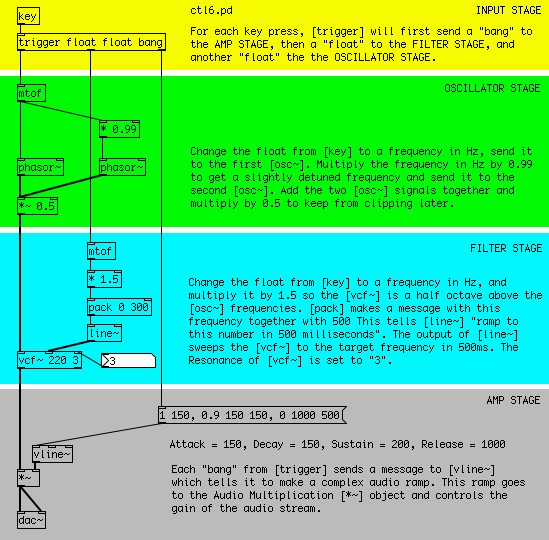
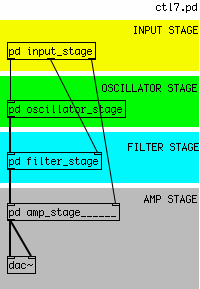
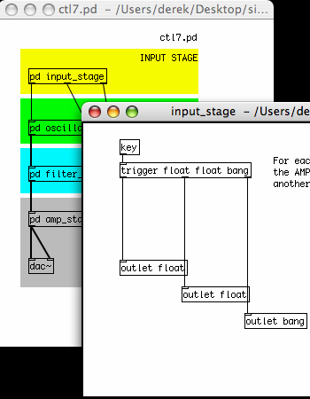
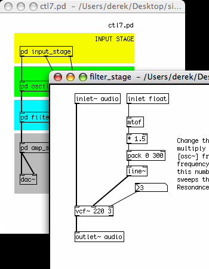
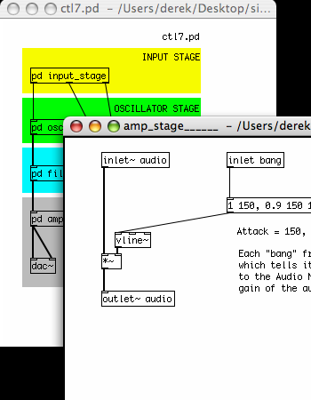

A Four Stage Filtered Additive Synthesizer
Our final example shows all the different elements of a simple synthesizer combined together into an instrument which can be played by the computer keyboard using [key]. It has four distinct sections:
- The INPUT STAGE: where note information is received and sent to the other stages.
- The OSCILLATOR STAGE: where the notes received from the INPUT STAGE are converted to frequencies which control two detuned Sawtooth Oscillators.
- The FILTER STAGE: where notes received from the INPUT STAGE are turned into an audio signal which sweeps a Voltage Controlled Filter, and where the audio signal from the OSCILLATOR STAGE is filtered.
- And the AMP STAGE: where the "bang" at the start of every note from the INPUT STAGE is used to trigger a message to the [vline~] Envelope Generator, which smoothly changes the volume of the audio from the FILTER STAGE.

The Input Stage
At the INPUT STAGE, we use the [key] object to get the ASCII values of the computer keys being pressed. This information is passed to the [trigger] object. [trigger] is a very important Pd object used to specify the order in which events happen.
What [trigger] does depends entirely on its creation arguments. When it receives any input, [trigger] sends messages to its output in a right to left order, based on these creation arguments. In this case, our [trigger] has the creation arguments "float", "float" and "bang". So on any input from [key], which sends a Floating Point Number (a "float"), [trigger] will first send the message "bang" out its right-most outlet, which will go the AMP STAGE. The it will send that float which came in to the center outlet, which will go to the FILTER STAGE. And finally it will send that float to the left-most outlet, which will go the OSCILLATOR STAGE. [trigger] is often abbreviated as [t], so the [trigger] in this example could also be typed as [t f f b].
For more information on [trigger], please see the Dataflow Tutorials in this FLOSS Manual.
The Oscillator Stage
This stage is concerned only with the Additive Synthesis of two detuned Sawtooth Oscillators. This means that the output of two [phasor~] objects, whose frequencies are slightly different from each other, will be added together. Since the difference in frequency is quite small (one [phasor~]'s frequency is 99% of the other's), instead of hearing two tones we will hear a periodic modulation of one tone.
The float from the [trigger] in the INPUT STAGE arrives at an [mtof] object, which converts it to a frequency in Hertz. This frequency is sent immediately to one [phasor~], and also to a Multiplication [*] object, which makes a new frequency number which is 99% of the other, and this new scaled frequency is sent to a second [phasor~].
The audio output of the two [phasor~] objects is added together in an Audio Multiplier [*~] object, which reduces the overall volume by 50% to prevent clipping when it reaches the soundcard. The resulting audio signal is sent to the FILTER STAGE.
The Filter Stage
The FILTER STAGE is responsible for taking the audio from the OSCILLATOR STAGE and applying a swept Voltage Controlled Filter [vcf~] object to that signal. The center frequency of the [vcf~] is also determined by the key which has been pressed on the keyboard.
When the float sent by [trigger] from the INPUT STAGE reaches this stage, it is converted into a frequency number by [mtof]. This number is multiplied by 1.5 so that the center frequency of [vcf~] is a half octave above that of the Sawtooth Oscillators. The number from [mtof] is [pack]ed together with 300 and sent to a [line~] object. This message tells [line~] to ramp to any new number it receives in 300 milliseconds.
The audio ramp from [line~] is used to control the center frequency of the [vcf~] object. The result is that the [vcf~] will not jump to any new frequency it receives, but it will smoothly ramp there over 300 milliseconds, resulting in the distinctive "filter sweep" sound.
The audio leaving the Voltage Controlled Filter is now sent to the AMP STAGE.
The Amp Stage
This final stage controls the overall volume of each note played by this synthesizer. It uses a [vline~] object as a complex Envelope Generator.
Every time a key on the keyboard is pressed, the [trigger] object in the INPUT STAGE sends the message "bang" to the AMP STAGE. Here it triggers the message "1 150, 0.9 150 150, 0 1000 500", which is sent to the [vline~] and tells [vline~] to make this audio ramp.
The exact instructions the message tells [vline~] are as follows:
- First ramp to 1 in 150ms
- Then ramp down to 0.9 in 150ms after a delay of 150ms from the start of the complex ramp.
- After that, ramp down to 0 in 1000ms after a delay of 500ms from the start of the complex ramp
This translates to:
- Attack: 150ms
- Decay: 150ms to a value of 0.9
- Sustain: 200ms (the 500ms of the last ramp minus the 300ms of the first two ramps equals a "rest period" of 200ms)
- Release: 1000ms
With these instructions, [vline~] creates an audio ramp which smoothly controls the overall volume of the audio coming from the FILTER SECTION via an Audio Multiplication [*~] object.
Subpatches
Now that we have an instrument that is separated into four distinct stages, we may want to make the screen a bit easier to look at by putting each stage inside its own Subpatch.
A Subpatch is simply a visual container which objects can be placed in to get them out of the way. To create a Subpatch in a Pd patch, simply create an object named [pd mysubpatch], where "mysubpatch" can be any name you choose. A new empty patch window opens up and you can cut or copy and paste the objects you want to place in the Subpatch inside this new window. When you close the window, the objects will be inside this Subpatch, still functioning as normal.
To get information in and out of a Subpatch, you can use the objects [inlet] and [outlet] for numbers and other messages, and the objects [inlet~] and [outlet~] for audio. This will create inlets and outlets in the Subpatch in the main patch you are working in, that you can connect as normal. You can give a creation argument to each inlet or outlet, which could be a reminder of what is supposed to come in our out of that inlet or outlet ("midi_note", "start_trigger", "audio_from_filter", etc etc).
Here is our Four Stage Subtractive Filtered Synthesizer, with each stage inside it's own Subpatch.




